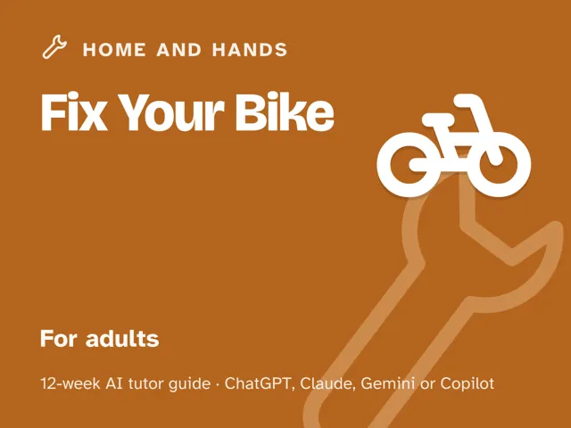
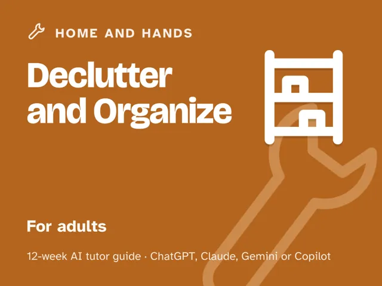

Declutter and Organize
$29Instant download: a PDF to read, a browser copy, and the AI-tutor file you hand straight to any AI assistant.Buy it on Etsy →
Take the free placement check first: 15 minutes, and it names the week to start at.
A masterclass you actually finish, because every week ends with a checkpoint you either demonstrate or redo. You've purged the closet before. You've had the tidy Saturday. And a month later it's all back. That's not a willpower problem; it's because a purge isn't a system. This 12-week plan installs the four things that make organizing stick: a fast decision rule for what stays, a specific home for everything you keep, a plan for the zones that generate the most chaos, and a maintenance rhythm your household can actually run without you policing it. An AI tutor coaches you through it, testing whether your systems really work, not just whether the room looks good today.
Format: a deep digital guide: 12 ready-to-run, fully scripted ~60-minute sessions you lead yourself. Every step is timed and written out for you; no expertise needed. Works with any modern chat AI, including free versions; the guide's front matter walks a complete beginner through setup in about five minutes.
What you get
- 12 deep weekly sessions, each about 60 minutes and fully scripted: a plain-language concept, a concrete worked example, a minute-by-minute session plan with the AI-tutor prompts built in, a "show me" checkpoint, common mistakes to avoid, and hands-on practice in your own home.
- A "Never used an AI chat assistant? Start here" walkthrough that takes a complete beginner from zero to ready in about five minutes; no paid plan needed.
- A read-me-first orientation that reframes "I'm just messy" as a missing system, not a character flaw, and sets the test every home must pass: if you can't find it, use it, and put it back in about ten seconds, it doesn't have a home yet.
- Four rescue prompts in the front matter for when the pile feels too big, when the AI starts deciding for you instead of coaching, when the same clutter keeps coming back, and a check that never lets a tidier pile pass for a finished system.
- Plain safety notes for the physical side of organizing: lifting, step stools, anchoring tall furniture, cleaning products, and where batteries, chemicals, and old medicines should go.
- One real space, planned in Week 10 and organized in Week 11, plus a written weekly reset routine you keep running after the course ends.
The 12 weeks
- Why Clutter Happens (and Why Tidying Alone Doesn't Fix It)
- The Keep, Donate, Toss Decision Rule
- One Category at a Time
- A Home for Everything
- The Entryway: Your Home's First Impression
- The Kitchen: Zones That Match How You Cook
- The Closet: Systems for the Stuff You Wear
- Paper and Digital Clutter
- Systems That Maintain Themselves (and Getting Everyone On Board)
- Project Week I: Plan One Real Space
- Project Week II: Organize the Space
- Demo Day and the System That Holds
Who it's for
Adults overwhelmed by clutter who want systems that actually hold: anyone who's decluttered before and watched it creep back, households with more than one person leaving things wherever, and first-timers who don't know where to start. No organizing background assumed, and no specific product, bin brand, or app required.
Why this instead of a free chatbot
Ask a raw chatbot how to declutter and it'll hand you a generic checklist you'll abandon by week two. This pack ships the method and honesty it lacks: a real progression from decision rule to category sort to high-impact zones to a maintenance rhythm your whole household actually uses, and a tutor set up to test whether a "home" you named actually works (by making you find and put something back from memory) instead of accepting that the room looks tidy today. The difference between a good Saturday and a home that stays organized.
FAQ
- Do I need any organizing experience? None. Week 1 starts with why clutter happens, and every week builds on real spaces in your own home.
- Never used an AI chat assistant before? That's fine. The guide's front matter walks complete beginners through setup in about five minutes.
- Which AI does it use? Works with any modern AI assistant (ChatGPT, Claude, Copilot, Gemini), and free versions are enough. You take phone photos for your own before-and-afters and describe them to the AI; attaching a photo is optional. No special software, paid plan, or app required.
- Is it only for the US? No. The guide is written in US English, and every prompt tells the AI to use your country or region for spelling, units, money, and examples. Local rules (how long to keep tax records, recycling and donation rules) are checked with your own official sources.
- Do I need to buy bins, labels, or an organizing system first? No. This teaches the method (a decision rule, homes, zones, maintenance) that works with containers you already own. Add products later if you want them; the system doesn't depend on them.
- What if I live with people who won't cooperate? Week 9 is built for exactly this. It covers designing systems your household will actually use and getting buy-in, not just organizing around everyone else.
- Refunds? Standard marketplace refund policy applies.
$29Instant download: a PDF to read, a browser copy, and the AI-tutor file you hand straight to any AI assistant.Buy it on Etsy →